Toggle Dryer Automation – KTM Leather
Location: KTM Leather (MG Group), Multan
This project involved the complete automation of a Leather Toggle Dryer Machine using a Delta ES2 PLC with extension modules and a Delta HMI. The system was designed for reliable, safe, and fully automatic leather stretching and drying operations.
System Overview
The machine consists of a fully enclosed cabin containing 20 toggle plates, along with two external plates: one on the front side and one on the push-out side. All movements follow a defined sequence controlled by PLC logic using limit switches and proximity sensors.
PLC & HMI Control Logic
- Delta ES2 PLC with extension modules
- 24 digital inputs and 20 digital outputs
- PLC logic developed in ISPSoft (Ladder Logic)
- HMI screens developed in DOPSoft
- 5 HMI screens including machine visualization and I/O mapping
- Manual and Auto mode operation
Machine Operation Sequence
- Front plate moves inside the cabin using a lever motor and chain
- Plate position confirmed by limit switches
- Push-out plate moves to the front side simultaneously
- Top motor moves the 20-plate frame forward
- One full cycle detected using proximity sensors
- Jacks move forward to the required position
- Jacks lift upward to stretch the leather
- Lift distance and hold time set from the HMI
- After hold time, jacks return to the home position
Pneumatic & Actuation System
- Double-acting pneumatic cylinders for jack lift and forward movement
- Solenoid valves controlled directly by PLC outputs
- Two position sensors inside each jack for lift distance measurement
HMI Features
- Complete machine graphical layout
- Input and Output mapping screen
- Real-time status of limit switches and proximity sensors
- Operator-friendly interface for faster troubleshooting
- Reduced machine downtime and simplified maintenance
Additional Controls
- Control of 5 blower systems
- Fully automatic plate movement in Auto mode
Software & Tools Used
- PLC: Delta ES2 Series
- PLC Programming: ISPSoft (Ladder Logic)
- HMI: Delta DOP Series
- HMI Software: DOPSoft
- Sensors: Limit switches & proximity sensors
- Pneumatics: Double-acting cylinders with solenoid valves
Project Outcome
The Toggle Dryer automation system improved production efficiency, ensured consistent leather stretching, reduced downtime, and provided a user-friendly HMI for operators and maintenance staff. The solution delivers a robust and scalable automation system suitable for industrial leather processing environments.
Project Images
 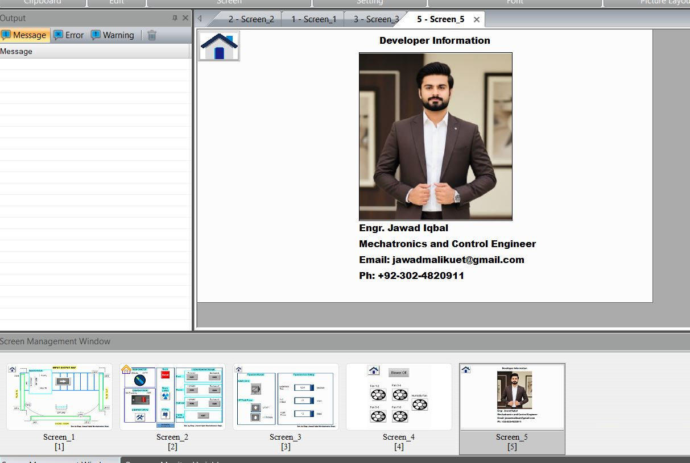
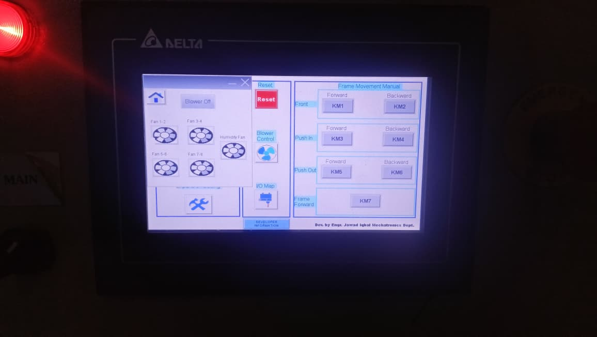
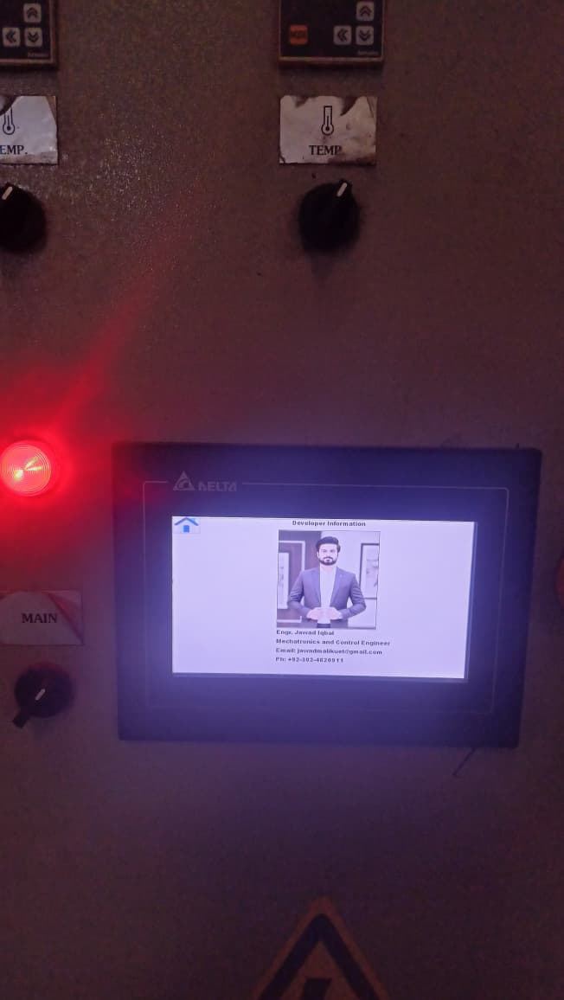
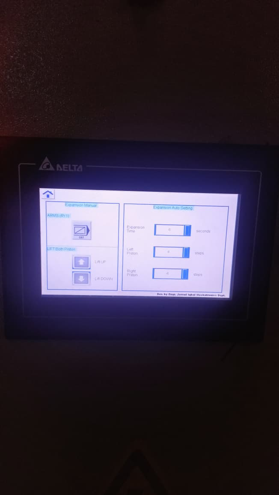
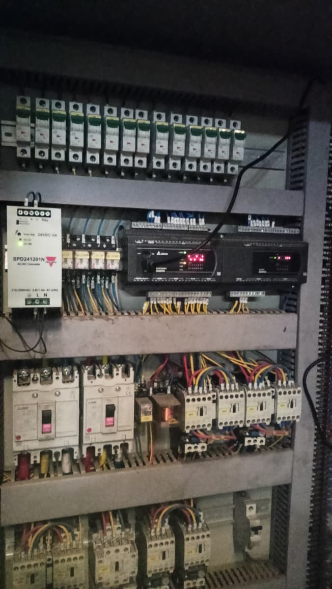
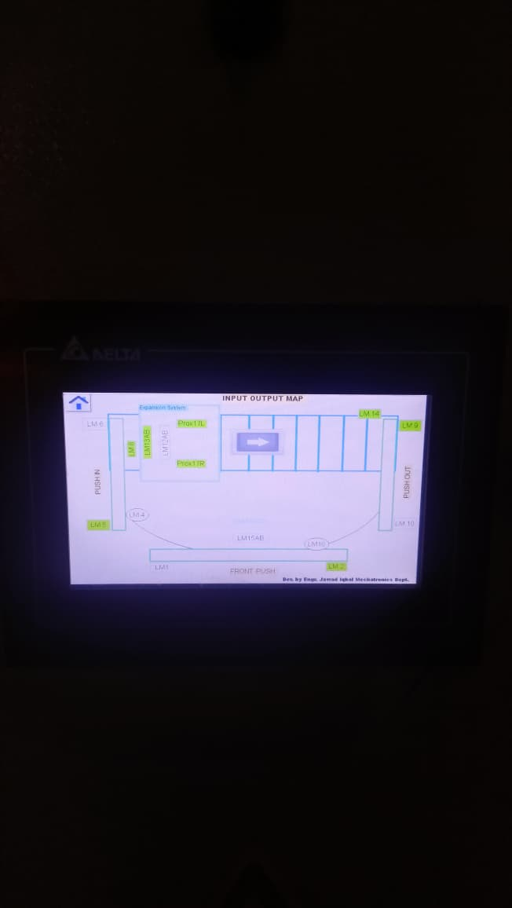
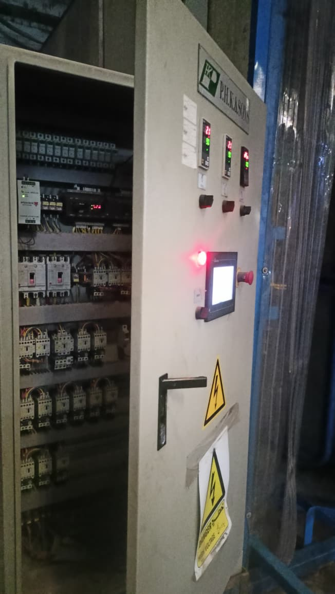
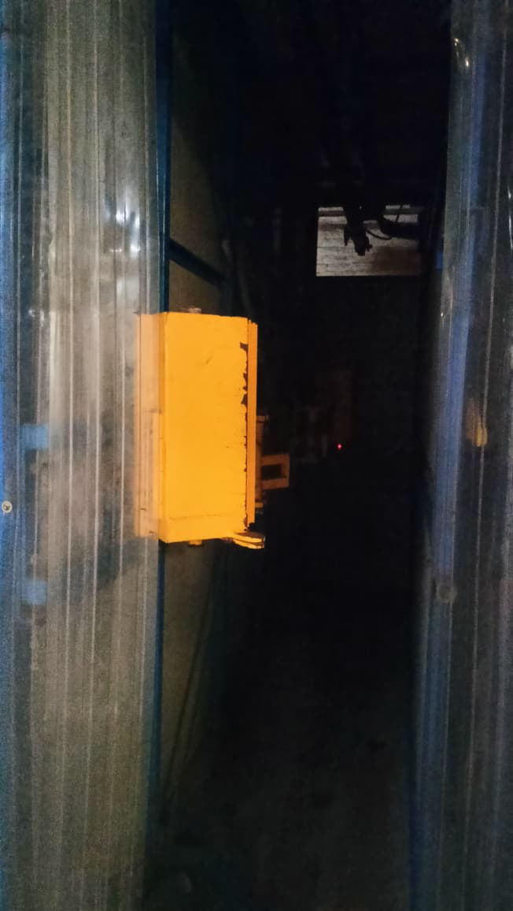
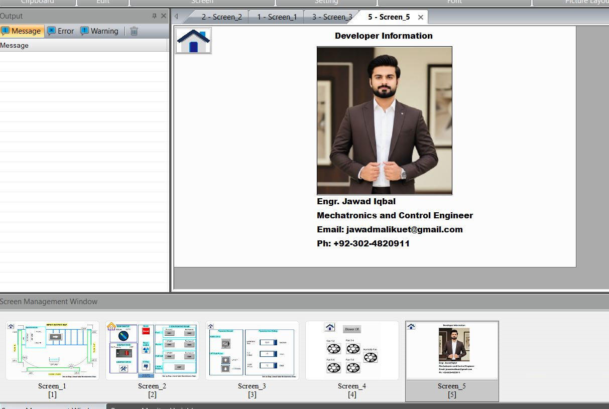
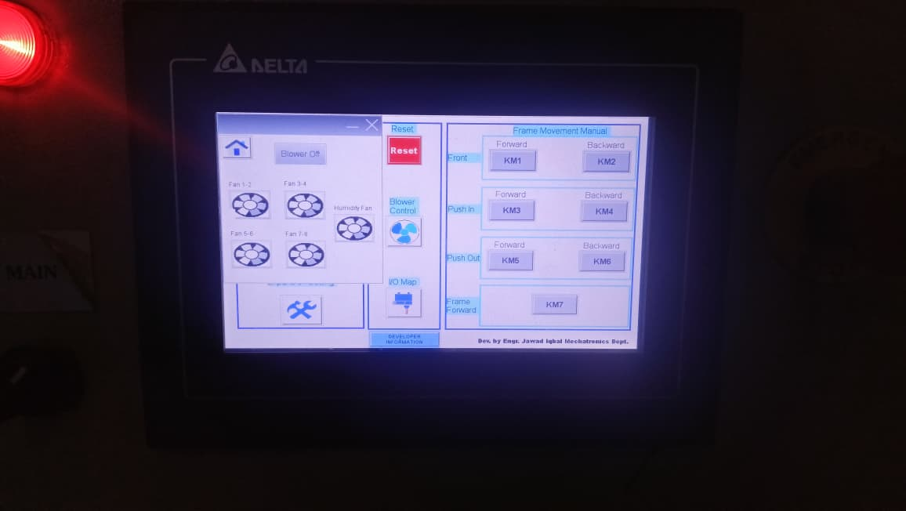
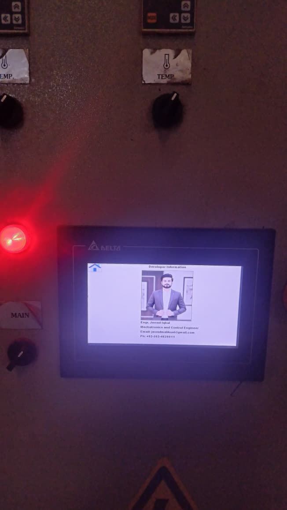
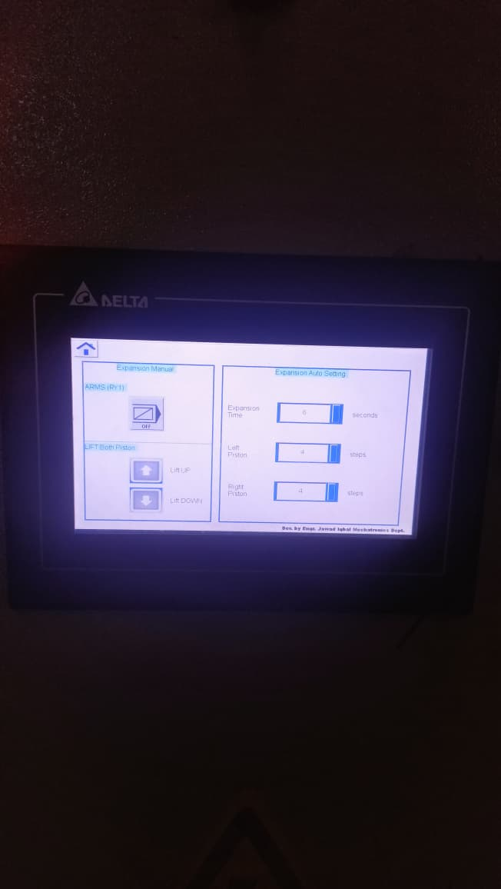
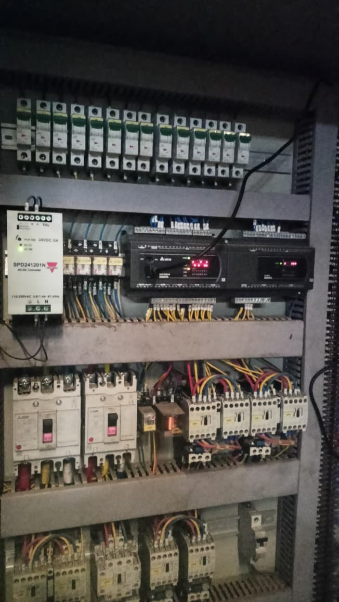
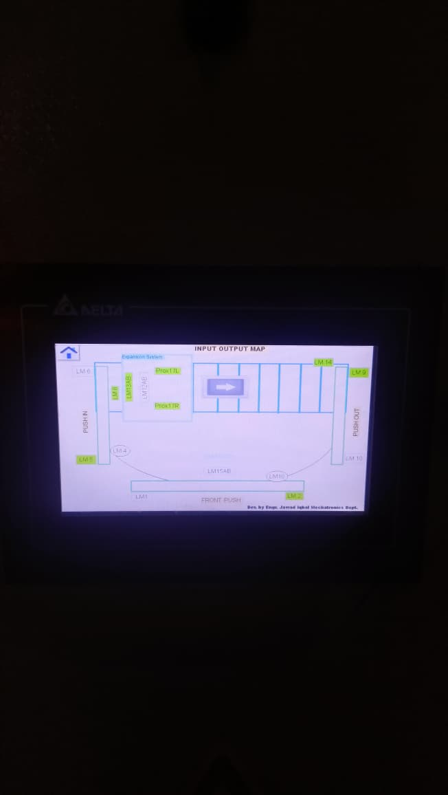
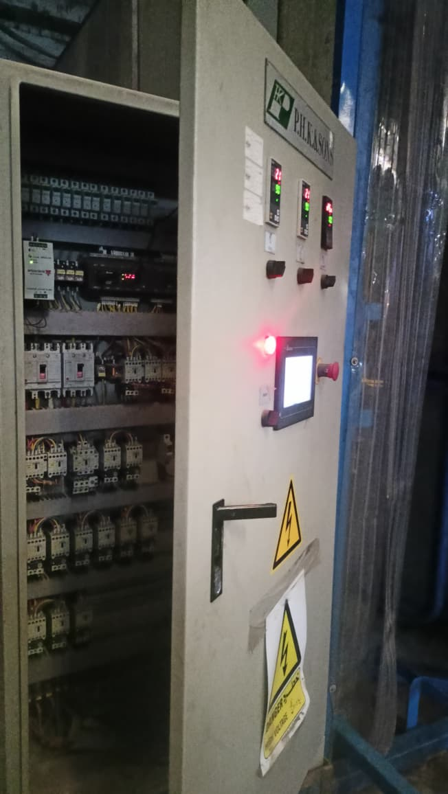
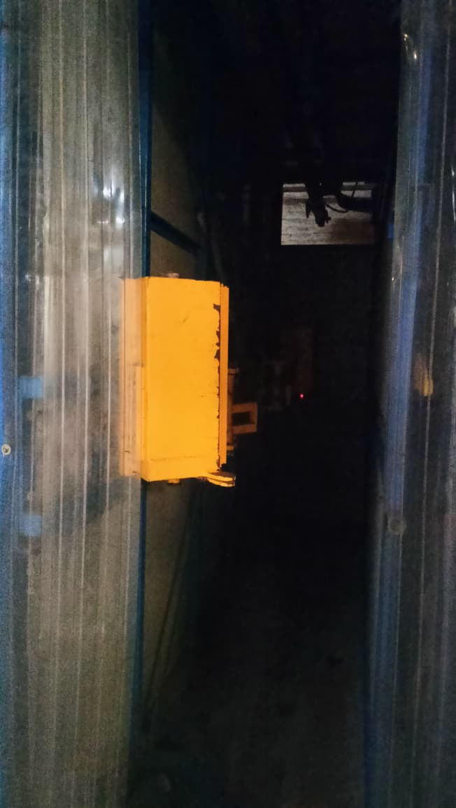